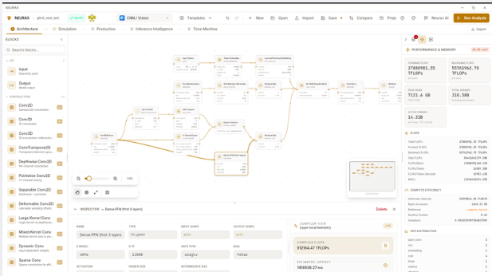
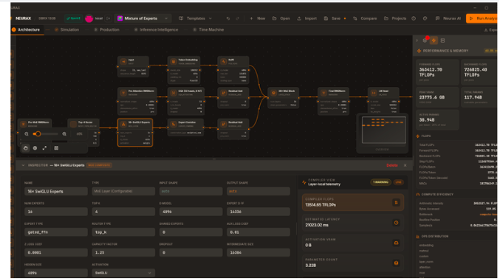
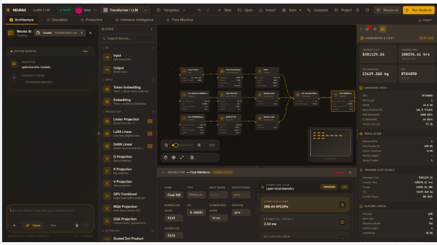
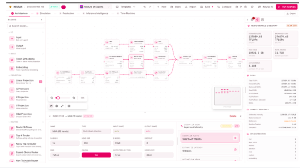

Introduction
Design · Simulate · Optimize
Know if it works before you spend a GPU-hour finding out
NEURAX is the environment where you design, simulate, and optimize AI architectures — instantly, without training a thing.
One environment, the same canvas, on four real designs:




The problem
Training an AI model today still means committing real money before you know if the design works. A team picks an architecture, rents the GPUs, and finds out hours or days later — mid-run, watching it crash out of memory, or worse, watching it finish and cost three times the budget.
The numbers back this up. Gartner reports that over half of generative AI projects are abandoned after proof-of-concept — and escalating cost is one of the top reasons cited, alongside unclear business value. The industry isn’t short on ambition; it’s short on a way to know, before spending, whether an idea can actually run.
Global AI infrastructure spending is projected to reach $497 billion in 2026 (IDC). Every dollar of that sits behind a decision someone made before seeing a single result — a decision usually made on intuition, spreadsheets, or last time’s memory.
Part of a bigger wave
“AI tooling that removes a costly blocker” has become one of the fastest-growing categories in software. Two examples, both real and publicly reported:
| Company | What it removes | Valuation | Revenue run rate |
|---|---|---|---|
| Cursor (Anysphere) | Writing code by hand | $50B | ~$4B ARR |
| Lovable | Needing a developer to ship an app | $13.3B | ~$500–600M ARR |
Cursor: ~$50B valuation, ~$4B annualized revenue as of mid-2026 (TechCrunch, The Next Web). Lovable: $13.3B valuation following its August 2026 Series C, ~$500–600M ARR (TechCrunch).
NEURAX doesn’t have a valuation to report — it’s early, and that’s not the point of showing these. What they demonstrate is real: the market pays enormous amounts to remove a single expensive blocker from a technical workflow. Cursor and Lovable removed the cost of writing software. NEURAX targets the blocker one level up — the $497 billion in AI infrastructure spending that sits behind every decision to train a model at all.
The vision
NEURAX exists to move that decision from after the fact to before you commit — one environment built around three things engineers actually do when they build a model.
Design
Lay out an architecture on a canvas, or import one from HuggingFace by URL. Drag in blocks, connect them, and see it take shape.
Simulate
See exactly what it will cost: memory, speed, dollars, energy — on the hardware you actually have, computed live as you build.
Optimize
Get concrete, numbered ways to make it fit, run faster, or cost less — computed for your design, not a generic tip.
All three happen instantly, without touching a GPU. The idea and the verdict are the same conversation, not separated by a training run.
What you gain
- No more surprise failures. Know if a design fits in memory before you rent anything.
- No more guessed budgets. See the real training cost, in dollars and energy, for your actual hardware.
- Faster iteration. Compare architecture decisions side by side, in seconds, instead of waiting on a job queue.
- A second opinion you can trust. Every number is computed live from the design you built — not looked up from a table of someone else’s model.
- Nothing leaves your machine. No account, no upload, no data ever sent anywhere you didn’t choose.
Who it’s for
A small, specialized model tuned to your own dataset gets exactly the same precise answer as a 70-billion-parameter one. That’s the case NEURAX is built for as much as the headline-grabbing one.
The change this makes
Right now, the cost of experimentation in AI is paid in GPU-hours — the industry’s scarcest, most expensive resource, spent finding out things that could have been known in advance. NEURAX’s bet is that shifting even a fraction of that discovery earlier — into a design canvas that answers in milliseconds instead of a training job that answers in hours — changes what teams can afford to try. More ideas get tested. Fewer promising ones get abandoned over a budget nobody saw coming.
That’s the change: not a faster way to train models, but a faster way to know which ones are worth training at all.
Desktop App
The NEURAX studio as an application you install, with the compiler running inside it — same interface, same analyses, same numbers as the web version, with one difference that matters: there is no server. Nothing you design is uploaded, no account is required, and it works with the network unplugged.
Runs on Linux, macOS, and Windows.
Linux and macOS
One command:
curl -fsSL https://raw.githubusercontent.com/rustnew/NEURAX/main/install.sh | sh
It downloads the bundle for your platform, installs it under ~/.local, adds
it to your applications menu, and makes neurax available in the shell.
Nothing is written outside your home directory and no step runs under sudo.
--version <tag> install a specific release instead of the newest
--prefix <dir> install somewhere other than ~/.local
--uninstall remove what the installer put there
Not sure yet? Read the script before running it — one file, plain POSIX
shell: install.sh.
Windows
There is no one-line installer — install.sh is a POSIX shell script and
doesn’t run under Windows’ own shells. Take the installer from
Releases instead:
NEURAX_<version>_x64-setup.exe
Run it and launch NEURAX from the Start menu. Windows 11 already has the WebView2 runtime NEURAX renders through; the installer adds it on Windows 10 if it’s missing.
Installing by hand, any platform
Every release publishes one asset per platform:
| Platform | File |
|---|---|
| Linux, any distribution | NEURAX_<version>_amd64.AppImage |
| Debian, Ubuntu | NEURAX_<version>_amd64.deb |
| Fedora, RHEL | NEURAX-<version>.x86_64.rpm |
| macOS, universal (Intel and Apple silicon) | NEURAX_<version>_universal.dmg |
| Windows | NEURAX_<version>_x64-setup.exe |
Building from source, and how it’s put together
Covered in the crate’s own README, not duplicated here:
neurax-desktop/README.md
— toolchain requirements per platform, the Tauri build commands, how the
desktop app embeds the real neurax-service API in-process rather than
reimplementing it, and the test that checks the desktop and web builds stay
identical in what they can do.